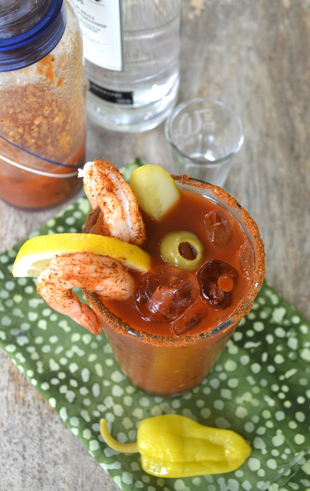

Odin's Spicy Bloody Mary

Get ready for this burst of flavour, with our spicy bloody mary!
You think a bloody mary is not a drink worthy of a god?
Ohhh ye of little faith!! Lay your lips on this delicious
concoction and prepare to weep for your mum as you
burn your tongue with this delicious fiery goodness!!
To make yourself a drink (and many more after), you'll need the following:
Ingredients
- 16 oz tomato juice
- 2 TBS fresh squeezed lemon juice
- 1 TBS lime juice
- 1/2 TBS Worcestershire sauce
- a few shakes of Tabasco
- 1 TBS prepared horseradish
- 2 teaspoons of pickle juice
- 1 tsp olive juice
- 1 tsp pepperoncini juice (optional)
- 1 TBS Old Bay seasoning
- 4-6 ounces of good quality vodka
- Garnish ideas: Pickle spear, celery stalk, green olives, shrimp,
pepperoncini, lemon slice or a lime slice.
Preparation
- Wet the rim of your glass with a piece of fresh lemon.
Then dip the glass rim into a tablespoon of Old Bay seasoning.
- Fill a cocktail shaker halfway with ice.
- Fill glasses halfway with ice.
- Mix all of the ingredients together in a separate pitcher
or container, stir it up well, and then pour
the mixture into your cocktail shaker, one batch
at a time.
- Give it a good shaking to get it nice and cold, then
pour the contents into your prepared glass.
- Add your garnish as desired and you are good to go!!
Want some more spice? How about a little snack?
Or you can go back to homepage